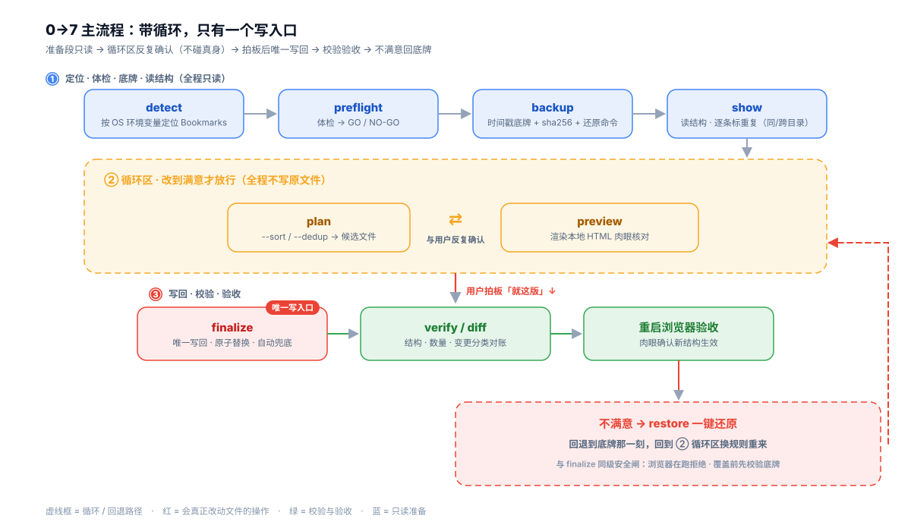

01 项目简介
解决什么问题
书签的底层存储是一个纯 JSON 文件、无加密。常规「导出 HTML → 整理 → 导入」路线里，导入是追加不是替换——整理完总多出一个「已导入」文件夹。本项目改为直接编辑 Bookmarks JSON，重启浏览器即生效、开启同步自动同步到账号。
一段话拿给 AI 全凭临场发挥：备份没强制、删了什么不透明、写坏了靠运气。所以把同一套逻辑做成 三份交付物、从轻到全。
核心主张：判断题给 AI，算术题给脚本
- 判断归 AI：怎么归类、改名、去重哪些，靠常识与用户拉扯，写在
SKILL.md； - 算术归脚本：体检、备份、原子写回、校验、还原——有唯一机械答案，锁进
bm.py； - 接缝= 命令行参数：AI 决定开关，脚本保证同一开关的执行永远一致；
- 铁律：有脚本必用脚本，禁止手改 JSON。
02 架构全景
三条路跑同一条带循环的 0→7 流程，差别只在「闸门由谁守」。模块关系与数据路径如下（悬停节点看说明）：

03 技术栈与设计亮点
实现
- 语言：Python 3（3.9+）
- 依赖：仅标准库
- 形态：单文件
bm.pyCLI - 标准：Agent Skills（SKILL.md）
- 技能：Chrome / Edge / Chromium / Brave / Vivaldi / Opera
安全设计
- 写操作先兜底：finalize 自动
prescript、restore 自动prerestore； - 双安全闸：进程检测 + Profile 占用锁（
SingletonLock）； - 原子写回：先
.tmp再os.replace，不留半个 JSON； - 数量护栏：候选 0 条拒绝、<真身 50% 大声告警。
工程护栏
- 54 项零依赖回归 + CI 三平台 × 2 Python；
- 做过变异验证（改反去重比较符 → 测试立刻变红）；
- 最小参数路径测试，专钉「变量忘初始化」事故；
- 入库通用站点样例，clone 即有靶子、零隐私。
04 核心：一条带循环的流程
不是一路走到底——先读准结构，进〔循环区〕反复改方案，全程不动真身；只有 finalize 真正写文件，不满意可一键 restore 回到底牌那一刻。

10 个子命令
detect | 自动定位 |
preflight | 体检 GO/NO-GO |
backup | 底牌 + sha256 |
show | 读结构 |
plan | 内存重排 |
preview | HTML 预览 |
diff | 路径感知对账 |
finalize | 唯一写回 |
verify | 校验 |
restore | 一键还原 |
路径感知对账
按「路径 + 名称 + 链接」多重集比对，diff / verify --before 能分辨：
- 真删除 / 真新增；
- 移动：同名链接换了目录；
- 改名：路径 + 链接不变；
- 副本减少：删掉多份同名同链中的一份 → 报「副本减少」而非「删除」。
去重规则（不自作主张删）
- 去重只在同目录内合并，跨目录同链接保留；
show逐条标注「同目录（会去重）」还是「跨目录（保留）」；plan --dedup保留date_added最新的一条。
05 仓库结构
📁 chrome-bookmarks-organize/ 仓库根（本页为 project_overview/，不入核心树）
📁 scripts/ 脚本与测试
- 🐍 bm.py 工具箱：单文件 · 零依赖 · 10 个子命令
📁 test/ 回归测试与靶场
- 🐍 run_tests.py 54 项零依赖回归，改完 bm.py 必跑
📁 sample/ 入库通用站点演示样例
- 📄 Bookmarks.before 乱放 40 条 + 埋点（重复 / 失效链接）
- 📄 Bookmarks.after 归入 7 个类目目录 · 38 条
- 🐍 make_sample.py 确定性生成脚本，可逐字节复现
- 📄 README.md 预期输出对照表
- 📄 README.md 说明 + 不入库的真实快照约定
📁 visualization/ 图表生成脚本（复用入口）
- 🐍 generate_workflow.py 生成 docs/workflow.svg
- 🐍 generate_deliverables.py 生成 docs/deliverables.svg
- 📄 README.md 使用方式 · 工具箱 · 安全设计 · 边界
- 📄 SKILL.md 技能本体：默认脚本 + 无脚本降级 + Pitfalls
- 📄 PROMPT.md 零安装轻路径：整段可复制的一段话
- 📄 MAINTENANCE.md AI/脚本分工合同 · 质量台账 · 变更日志
- 📄 LICENSE MIT · © 2026 LPK3215
📁 docs/ 可视化示意
- 📄 workflow.svg · deliverables.svg 由 scripts/visualization/ 生成
📁 .github/workflows/ CI
- 📄 test.yml 三平台 × Python 3.9/3.11 回归 + 冒烟
- ⚙️ .gitignore / .gitattributes 屏蔽真实书签快照 · 统一 LF
scripts/test/ 下的 Bookmarks.before/Bookmarks.after（真实快照，~99 条）含隐私，被 .gitignore 屏蔽、绝不入库；上树只展示入库结构。
06 快速开始
clone 本仓库，浏览器完全退出后由 AI 调 scripts/bm.py 走完整流程。
bash — 默认全流程
python scripts/bm.py detect # 找到要整理哪个
python scripts/bm.py preflight --file "<Bookmarks>" # GO/NO-GO
python scripts/bm.py backup --file "<Bookmarks>" # 底牌 + 还原命令
python scripts/bm.py show --file "<Bookmarks>" # 读准结构
python scripts/bm.py plan --file "<Bookmarks>" --out cand --sort --dedup
python scripts/bm.py preview --file cand --base "<Bookmarks>" --out preview.html
# 满意后（浏览器已退出）：
python scripts/bm.py finalize --from cand --target "<Bookmarks>"
python scripts/bm.py verify --file "<Bookmarks>" --before "<底牌>"
# 不满意：
python scripts/bm.py restore --backup "<底牌>" --target "<Bookmarks>"不下载 scripts/，只把 SKILL.md 加载给 AI：流程不变，AI 按同一套 0→7 + 硬约束自己读写 JSON。
- 没有进程探测 / sha256 校验 / HTML 预览 / 一键 restore——这些护栏由 AI 人肉执行；
- 关键纪律：先关浏览器 → 自己拷一份底牌 → 改完请你重启验收；
- 适合拿不到脚本（联网装 skill、只贴文件）时的兜底。
把 PROMPT.md 里整段提示词复制给任意聊天 AI（Claude / CodeBuddy / GPT…），再补一句你的书签文件路径即可。
- 零安装、不 clone、一次性小改、先体验、拿去分享；
- 最轻也最裸：无闸门，备份/退浏览器/写 UTF-8 全靠 AI 临场做对，不是正式整理方式。
07 测试与质量保障
回归护栏（锁安全不变量）
- run_tests.py：54 项 · 零依赖 unittest · 约 1 秒；
- 覆盖：双安全闸 / 原子写回 / 候选非法不落地 / 路径感知对账 / detect 三平台根 / 最小参数路径 / 脏输入边界；
- CI（.github/workflows/test.yml）：Windows / macOS / Linux × Python 3.9 / 3.11，同一套测试 + 样例冒烟；
- 已做变异验证：把「保留最新」比较符改反 → 测试立刻变红，证明有约束力。
主要测试类
TestFinalizeSafetyTestRestoreSafetyTestDedupAndSortTestDiffClassificationTestDetectRootsTestVerifyAndShowTestPreflightSyncAwarenessTestProfileOccupancyTestMinimumArgumentPathsTestEdgeInputRobustnessTestRestoreCorruptBackupTestFinalizeSelfTarget
真实验收按阶梯推进：L0 合成样例 → L1 一次性 Profile（含重启）→ L2 真实只读 → L3 完整整理。
护栏成长曲线（真实变更日志）
| 版本 | 里程碑 | 回归测试 |
|---|---|---|
| v1.6.0 | 引入 run_tests.py | 28 项 |
| v1.7.0 | 云端同步感知 | 32 项 |
| v1.8.0 | Profile 占用锁 / 最小参数路径 | 42 项 |
| v1.9.0 | 坏底牌拒绝还原 / 拒绝自我覆盖 | 46 项 |
| v1.10.0 | finalize 数量护栏 | 48 项 |
| v1.13.0 | 脏输入边界加固一轮 | 54 项 |
| v1.14.0 | 可视化资产（行为零变化） | 54 项 |
样例一图看懂整理效果
before · 乱放 40 条
- 书签栏 ─ 10 条平铺
- 📁 新建文件夹
- 📁 新建文件夹 (1)
- 📁 新建文件夹 (2)
- … 无分类、重复收藏
→
after · 归入 7 类目 · 38 条
- 📁 购物 / 新闻资讯 / 技术开发
- 📁 学习资源 / 视频娱乐 / 生活工具
- 📁 博客与阅读
- 同目录重复并入 1 条
- 失效旧链接已删除（净变化 −2）
演示数据刻意埋点
| 埋点 | 验证什么 |
|---|---|
| 「大众点评」同目录 ×2（日期不同） | plan --dedup 保留最新 → diff 报「副本减少」 |
| 失效旧链接一条 | diff 报「删除」——真实清理动作 |
| 40 条全部移动进类目 | diff / preview --base 的「移动」对账 |
| before 有 checksum / after 无 | finalize 删 checksum 行为 |
08 文档索引
09 使用前提与已知边界
硬性前提
- 整理真实书签时浏览器必须完全退出（含托盘后台）——脚本由 preflight/finalize 拦截，仅提示词靠开口确认；
- 整理规则先与 AI 确认，不自作主张删除任何一条书签。
已知边界
- 没有「热编辑」：改文件时浏览器必须关着；
date_added为 Chrome 时间戳（自 1601-01-01 的微秒），已自动转日期；- 只管结构整理，不判断链接是否失效 / 内容好坏；
- detect 的 macOS/Linux 分支与更多内核已实现，但尚未在非 Windows 机器实测（由 CI 兜底）。